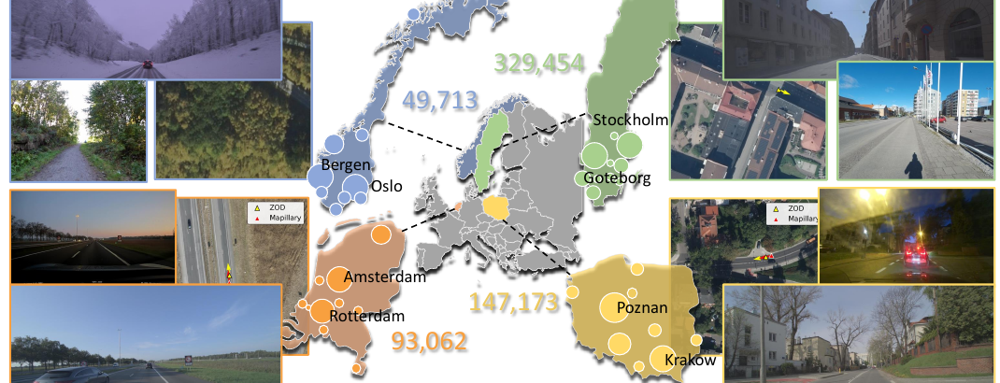

Open by design
Ground imagery comes from ZOD and Mapillary, paired with aerial imagery from national mapping agencies with open access.
Open dataset for fine-grained cross-view localization
An open, diverse, and large-scale benchmark pairing street-level images with geo-referenced aerial imagery across Europe.
Why OpenCVL
Ground imagery comes from ZOD and Mapillary, paired with aerial imagery from national mapping agencies with open access.
The dataset combines calibrated vehicle-mounted sensors with in-the-wild images from pedestrians, cyclists, cars, and other capture platforms.
Evaluation splits are curated for reliable pose labels, including cross-area, snowy, and in-the-wild test sets.

Coverage
OpenCVL spans Sweden, the Netherlands, Poland, and Norway. It includes high-resolution aerial crops at 0.045 to 0.165 m/pixel, each covering a 100 m by 100 m region around a ground-level query.
Data composition
Vehicle-mounted front-facing cameras, LiDAR, and high-end GNSS provide accurate pose supervision for training and curated evaluation.
276,501 imagesCrowd-sourced street-level imagery adds broad variation in camera type, mounting, viewpoint, time, weather, and scene content.
342,901 imagesAerial crops are retrieved from national mapping agencies for Sweden, the Netherlands, Poland, and Norway.
100 m by 100 m crops
Evaluation protocol
Training split
Combines 240,226 ZOD pairs with 341,540 Mapillary pairs to scale supervised learning with both accurate and diverse data.
Pose curation
Baseline benchmark
OpenCVL full training, compared with 7.55 m from the ZOD-only subset.
Robustness under seasonal appearance changes in curated ZOD test data.
Diverse Mapillary training reduces error on the in-the-wild test split.
| Training data | Cross-area loc. mean | Cross-area ori. mean | Snowy loc. mean | Snowy ori. mean | In-the-wild loc. mean | In-the-wild ori. mean |
|---|---|---|---|---|---|---|
| KITTI w/o orientation prior | 15.57 m | 79.75 deg | 15.92 m | 83.30 deg | 15.98 m | 70.72 deg |
| OpenCVL, ZOD only | 7.55 m | 16.20 deg | 8.04 m | 8.87 deg | 8.61 m | 35.59 deg |
| OpenCVL, full | 6.81 m | 14.29 deg | 7.79 m | 6.59 deg | 7.37 m | 26.70 deg |
Access
The page is ready for public links once the dataset release assets are available. The placeholder actions keep the layout stable for the final release.
Citation
@inproceedings{opencvl2026,
title = {OpenCVL: An Open, Diverse, and Large-Scale Dataset for Fine-Grained Cross-View Localization},
author = {Anonymous ECCV Submission},
booktitle = {European Conference on Computer Vision},
year = {2026}
}